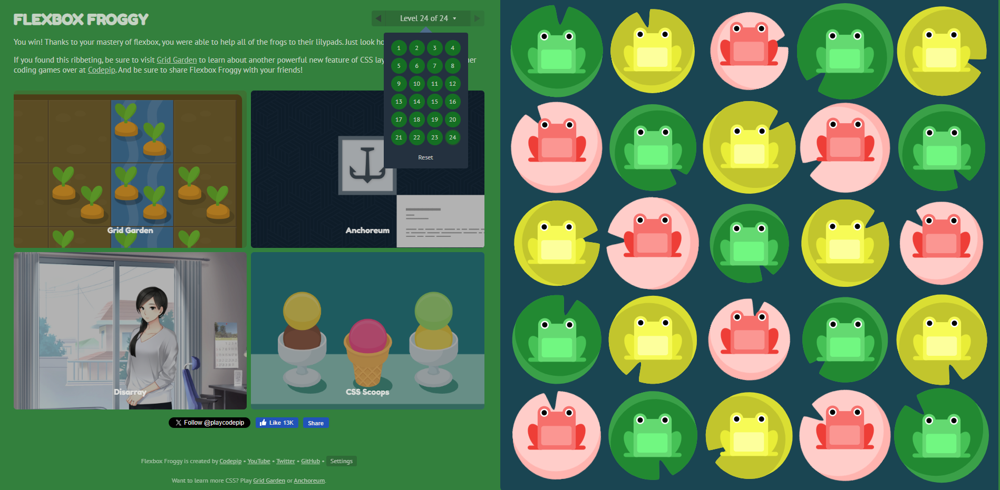
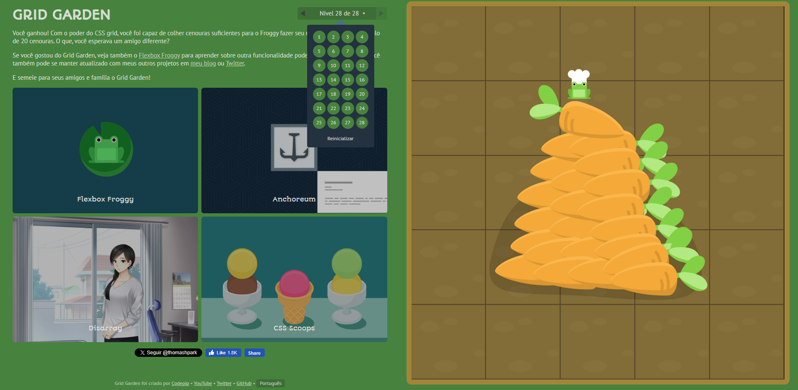

FLEXBOX: A POÇÃO DO ALINHAMENTO
Aprenda como o Flexbox é usado para layouts unidimensionais, alinhar itens e distribuir espaço ao longo de um único eixo.

Alinhando Abóboras
O Flexbox facilita organizar itens. Aqui, estamos espaçando nossas abóboras assustadoras uniformemente em seu contêiner.
.container {
display: flex;
justify-content: space-between;
align-items: center;
}
display: flex;
justify-content: space-between;
align-items: center;
}
Demonstração ao vivo:
🎃
🎃
🎃
CSS GRID: TECENDO A REDE
Descubra como o Grid cria layouts 2D poderosos, definindo linhas e colunas para estruturas complexas e responsivas.

Layout da Prateleira de Poções
O Grid é perfeito para organizar itens em linhas e colunas, como esta prateleira de poções misteriosas.
.container {
display: grid;
grid-template-columns: 1fr 1fr 1fr;
gap: 1em;
}
display: grid;
grid-template-columns: 1fr 1fr 1fr;
gap: 1em;
}
Demonstração ao vivo:
🧪
🔮
⚗️
🧿
🩸
✨